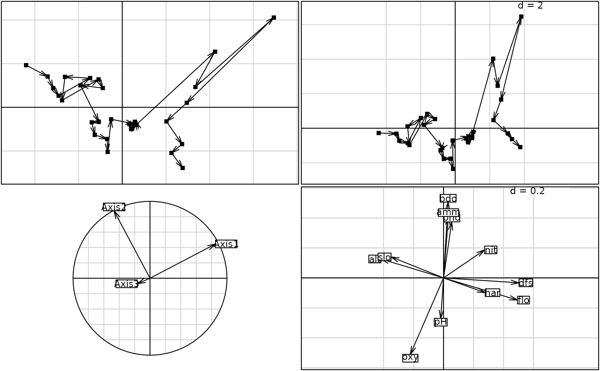
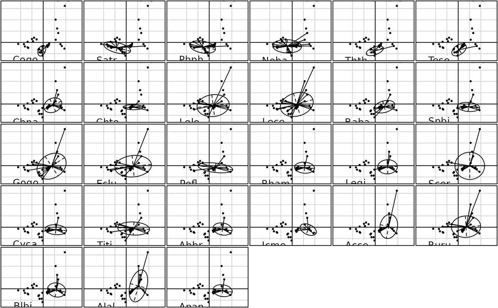
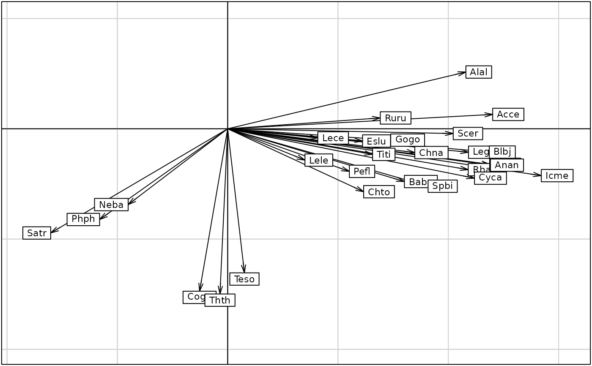

Method to Analyse a pair of tables : Environmental and Faunistic Data
niche.Rdperforms a special multivariate analysis for ecological data.
Arguments
- dudiX
a duality diagram providing from a function
dudi.coa,dudi.pca, ... using an array sites-variables- Y
a data frame sites-species according to
dudiX$tabwith no columns of zero- scannf
a logical value indicating whether the eigenvalues bar plot should be displayed
- nf
if scannf FALSE, an integer indicating the number of kept axes
- x
an object of class
niche- ...
further arguments passed to or from other methods
- xax, yax
the numbers of the x-axis and the y-axis
- xtest
an object of class
niche- nrepet
the number of permutations for the testing procedure
Value
Returns a list of the class niche (sub-class of dudi) containing :
- rank
an integer indicating the rank of the studied matrix
- nf
an integer indicating the number of kept axes
- RV
a numeric value indicating the RV coefficient
- eig
a numeric vector with the all eigenvalues
- lw
a data frame with the row weigths (crossed array)
- tab
a data frame with the crossed array (averaging species/sites)
- li
a data frame with the species coordinates
- l1
a data frame with the species normed scores
- co
a data frame with the variable coordinates
- c1
a data frame with the variable normed scores
- ls
a data frame with the site coordinates
- as
a data frame with the axis upon niche axis
References
Dolédec, S., Chessel, D. and Gimaret, C. (2000) Niche separation in community analysis: a new method. Ecology, 81, 2914--1927.
Author
Daniel Chessel
Anne-Béatrice Dufour anne-beatrice.dufour@univ-lyon1.fr
Stéphane Dray stephane.dray@univ-lyon1.fr
Examples
data(doubs)
dudi1 <- dudi.pca(doubs$env, scale = TRUE, scan = FALSE, nf = 3)
nic1 <- niche(dudi1, doubs$fish, scann = FALSE)
if(adegraphicsLoaded()) {
g1 <- s.traject(dudi1$li, plab.cex = 0, plot = FALSE)
g2 <- s.traject(nic1$ls, plab.cex = 0, plot = FALSE)
g3 <- s.corcircle(nic1$as, plot = FALSE)
g4 <- s.arrow(nic1$c1, plot = FALSE)
G1 <- ADEgS(list(g1, g2, g3, g4), layout = c(2, 2))
glist <- list()
for(i in 1:ncol(doubs$fish))
glist[[i]] <- s.distri(nic1$ls, dfdistri = doubs$fish[, i], psub.text = names(doubs$fish)[i],
plot = FALSE, storeData = TRUE)
G2 <- ADEgS(glist, layout = c(5, 6))
G3 <- s.arrow(nic1$li, plab.cex = 0.7)
} else {
par(mfrow = c(2, 2))
s.traject(dudi1$li, clab = 0)
s.traject(nic1$ls, clab = 0)
s.corcircle(nic1$as)
s.arrow(nic1$c1)
par(mfrow = c(5, 6))
for (i in 1:27) s.distri(nic1$ls, as.data.frame(doubs$fish[,i]),
csub = 2, sub = names(doubs$fish)[i])
par(mfrow = c(1, 1))
s.arrow(nic1$li, clab = 0.7)
}



data(trichometeo)
pca1 <- dudi.pca(trichometeo$meteo, scan = FALSE)
nic1 <- niche(pca1, log(trichometeo$fau + 1), scan = FALSE)
plot(nic1)
#> Error in s.corcircle(dfxy = nic1$as, xax = 1, yax = 2, plot = FALSE, storeData = TRUE, pos = -3, psub = list(text = "Unconstrained axes"), pbackground = list( box = FALSE), plabels = list(cex = 1.25)): non convenient selection for dfxy (can not be converted to dataframe)
niche.param(nic1)
#> inertia OMI Tol Rtol omi tol rtol
#> Che 6.433882 2.77316816 1.0214504 2.639263 43.1 15.9 41.0
#> Hyc 11.914482 4.44884944 2.3877161 5.077916 37.3 20.0 42.6
#> Hym 10.573796 0.09548554 2.5386420 7.939669 0.9 24.0 75.1
#> Hys 7.625791 0.63040842 0.7348512 6.260531 8.3 9.6 82.1
#> Psy 10.470153 0.43447855 3.9237418 6.111932 4.1 37.5 58.4
#> Aga 7.430579 1.29116377 1.5507447 4.588670 17.4 20.9 61.8
#> Glo 14.360078 6.17685139 4.7591657 3.424061 43.0 33.1 23.8
#> Ath 11.244671 1.79679264 2.7654073 6.682471 16.0 24.6 59.4
#> Cea 18.711518 12.23859181 4.1775853 2.295341 65.4 22.3 12.3
#> Ced 11.789951 0.87321186 3.2451344 7.671604 7.4 27.5 65.1
#> Set 12.607986 4.28597109 3.7224679 4.599547 34.0 29.5 36.5
#> All 6.805252 0.72091250 1.2144331 4.869906 10.6 17.8 71.6
#> Han 10.368865 1.20620645 3.3672977 5.795361 11.6 32.5 55.9
#> Hfo 17.543552 6.75786236 7.3444406 3.441250 38.5 41.9 19.6
#> Hsp 13.976515 2.89982751 5.6222008 5.454487 20.7 40.2 39.0
#> Hve 12.253601 4.59849113 3.5177233 4.137387 37.5 28.7 33.8
#> Sta 9.391826 0.58873968 2.5226450 6.280442 6.3 26.9 66.9
rtest(nic1,19)
#> class: krandtest lightkrandtest
#> Monte-Carlo tests
#> Call: as.krandtest(sim = t(sim), obs = obs)
#>
#> Number of tests: 18
#>
#> Adjustment method for multiple comparisons: none
#> Permutation number: 19
#> Test Obs Std.Obs Alter Pvalue
#> 1 Che 2.77316816 -0.7389181 greater 0.75
#> 2 Hyc 4.44884944 1.0645792 greater 0.15
#> 3 Hym 0.09548554 0.1112859 greater 0.50
#> 4 Hys 0.63040842 -0.7950065 greater 0.75
#> 5 Psy 0.43447855 14.1223933 greater 0.05
#> 6 Aga 1.29116377 5.1937375 greater 0.05
#> 7 Glo 6.17685139 5.4090838 greater 0.05
#> 8 Ath 1.79679264 0.9573026 greater 0.25
#> 9 Cea 12.23859181 4.0734904 greater 0.05
#> 10 Ced 0.87321186 4.1340535 greater 0.05
#> 11 Set 4.28597109 13.2416917 greater 0.05
#> 12 All 0.72091250 1.2868036 greater 0.15
#> 13 Han 1.20620645 0.3796624 greater 0.30
#> 14 Hfo 6.75786236 3.1250277 greater 0.05
#> 15 Hsp 2.89982751 11.4638142 greater 0.05
#> 16 Hve 4.59849113 3.5876166 greater 0.05
#> 17 Sta 0.58873968 5.0482141 greater 0.05
#> 18 OMI.mean 3.04805955 6.6947849 greater 0.05
#>
data(rpjdl)
plot(niche(dudi.pca(rpjdl$mil, scan = FALSE), rpjdl$fau, scan = FALSE))